Day 5｜星空、韓國奶奶與100公里—Puente la Reina → Estella
2026 年 5 月 25 日 · Puente la Reina → Estella · 22.5km
今天再次摸黑出發。在皇后之橋遇見滿天星斗，架起相機拍下縮時攝影，一回頭夥伴卻都走遠了。
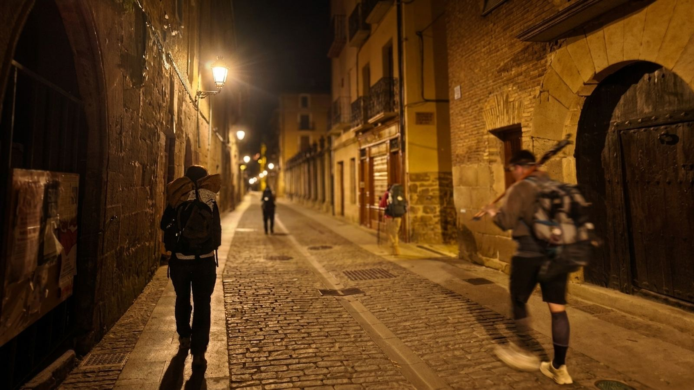
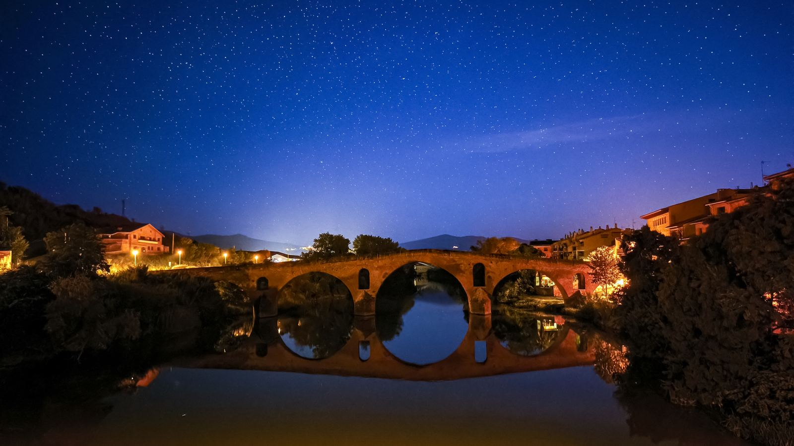
獨自摸黑走著，到了分叉路，碰巧遇見一位老先生。我們結伴同行選擇了上山，在漆黑的山路裡彼此照應。那種無言的陪伴，是這趟路最珍貴的禮物。有時候，最深的連結真的不需要語言。
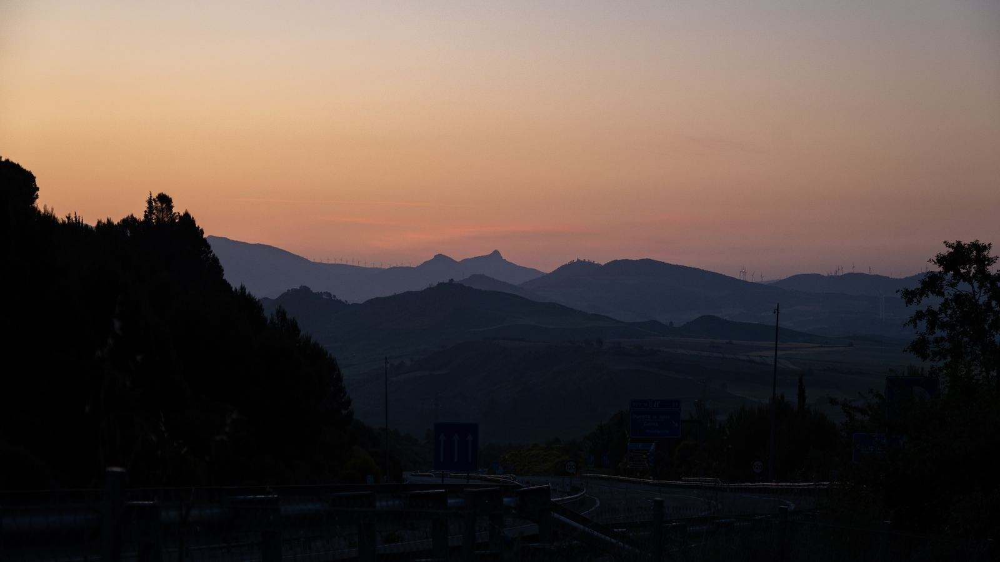
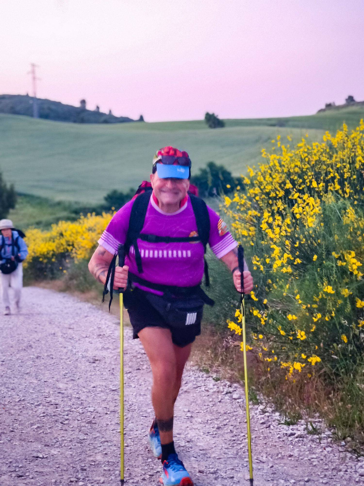
在深山裡連續攀爬了一個多小時，終於翻越制高點。今天的起步，一點都不輕鬆。
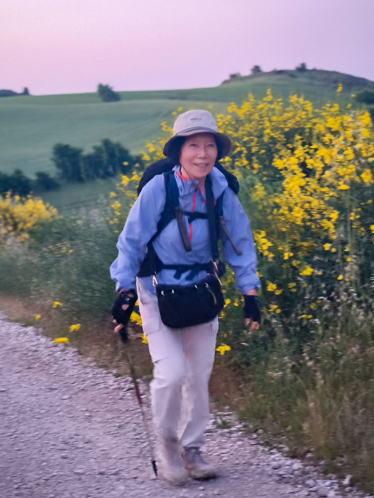
路上遇到一位獨自朝聖的 72 歲韓國奶奶。即使語言不通，但她的開朗與勇氣卻充滿感染力。她的笑容證明了：年齡從來不是限制，心態才是。她用行動親自詮釋了，什麼叫做「永遠不會太晚」。
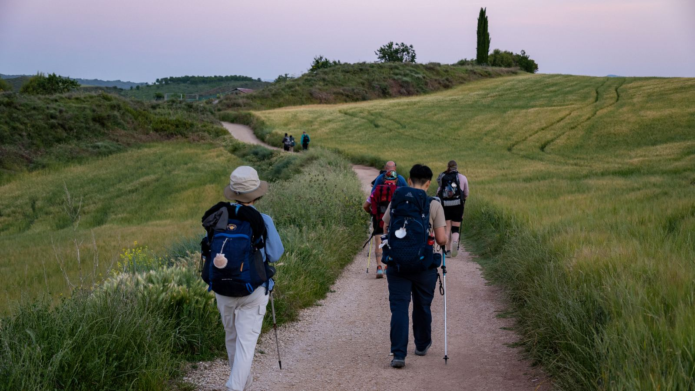
這段路的田野風光無敵。橄欖園、葡萄園與麥田交錯，這就是 Navarra 地區最經典的風景。隨著空拍機升空，清晨小鎮的寧靜盡收眼底。
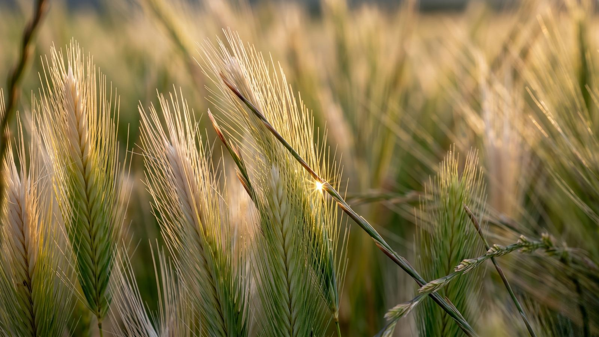
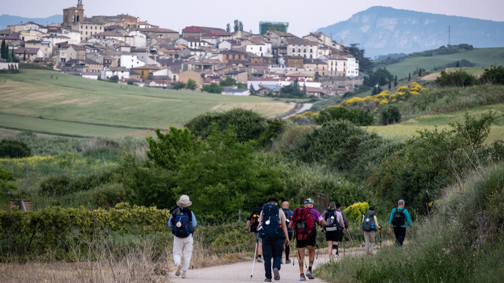
這段路線很特別，來到小鎮竟然直接穿過一棟屋子。路過記得停下腳步，裡面有印章必蓋！
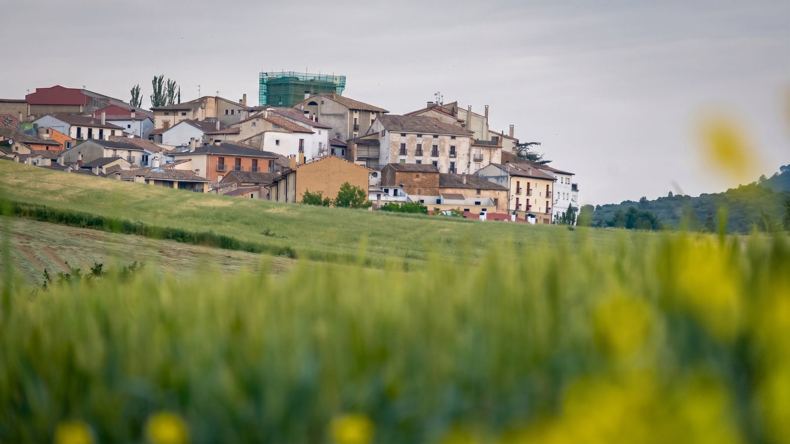
穿梭中世紀小鎮。石造教堂、窄巷、噴泉，每個轉角都在倒轉時光。路上人煙稀少，節奏自己掌控，享受一個人的徒步！
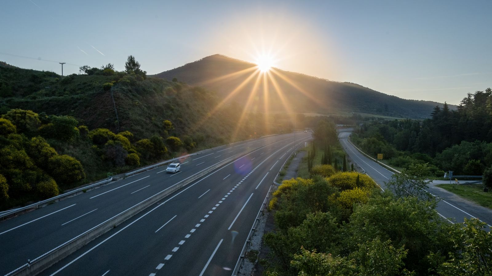
路過無人看管的自由捐贈水果攤，攤位沒有老闆，裝滿了人與人之間最純粹的信任。
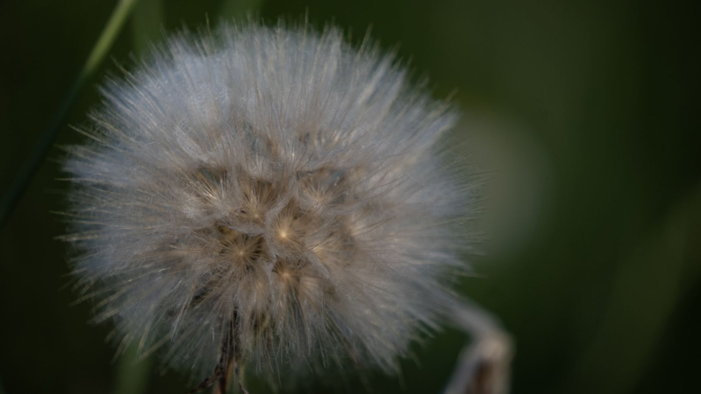
早上十點多太陽高掛，烤得人發昏，我們的徒步里程正式突破 100 公里。考驗的早就不是體力，不看終點還有多遠，只專注眼前的這一步。專注當下，目標自然會抵達。
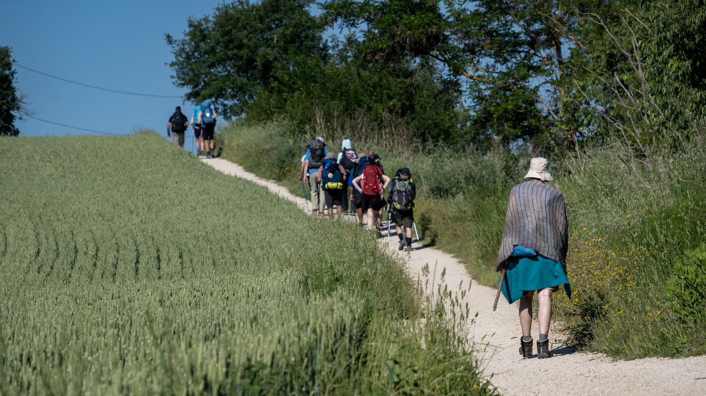
當我們終於抵達 Estella 時，那種解脫感真的無以言表。Estella 在西班牙語中的意思是「星星」，眼前的醫院、教堂、修道院與橋樑，全是為了服務朝聖者而建。走在這些古老的石板路上，我能感受到歷史的厚重與溫度，也感受到了無數朝聖者在這條路上留下的足跡與祝福。
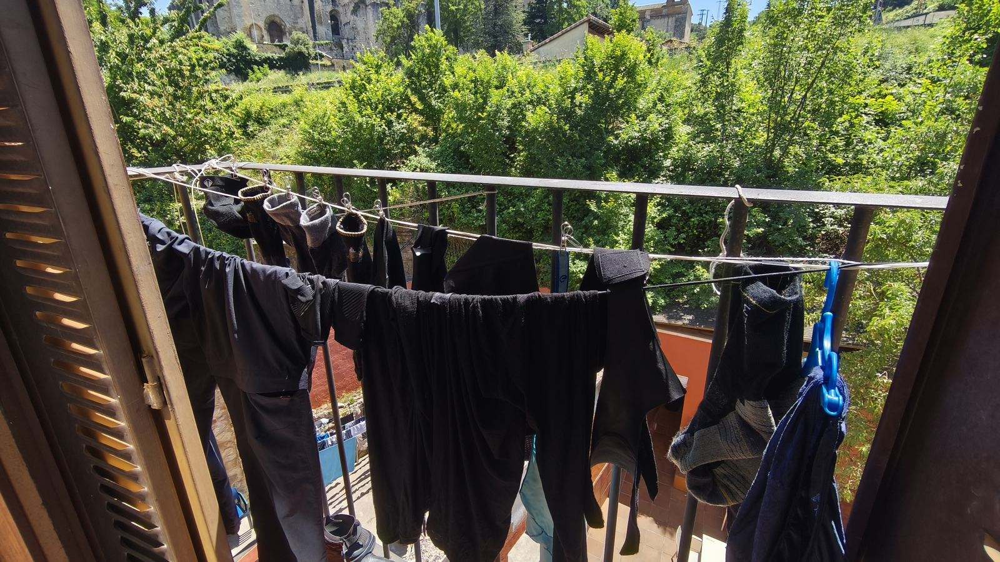
今天的落腳點，是星星鎮上的「埃斯特利亞公立庇護所」。一晚只要 8 歐元！不僅空間寬敞、能容納超多朝聖者，整體環境更是沒話說。這 CP 值，直接滿分。
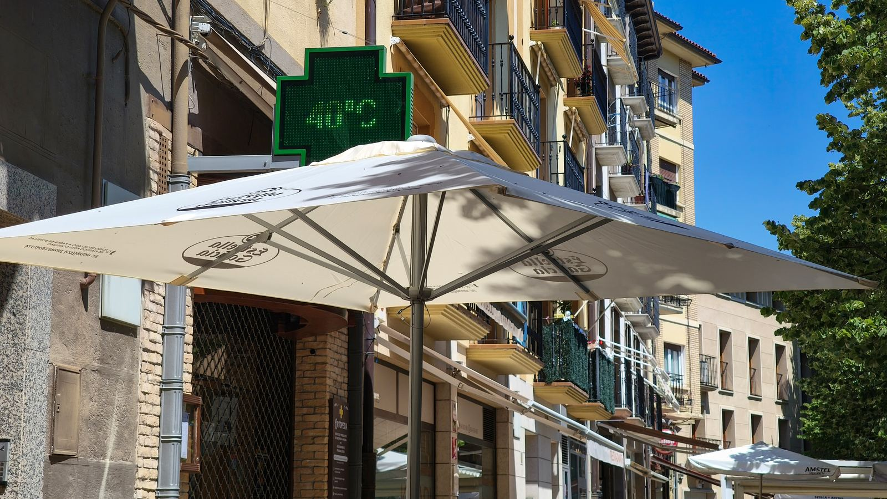
遇上週末，12 世紀羅馬式的 San Pedro de la Rúa 教堂大門緊閉。我們來到小鎮餐廳，直接點一份朝聖者餐。前菜、牛排，再配上冰啤酒，瞬間滿血復活。
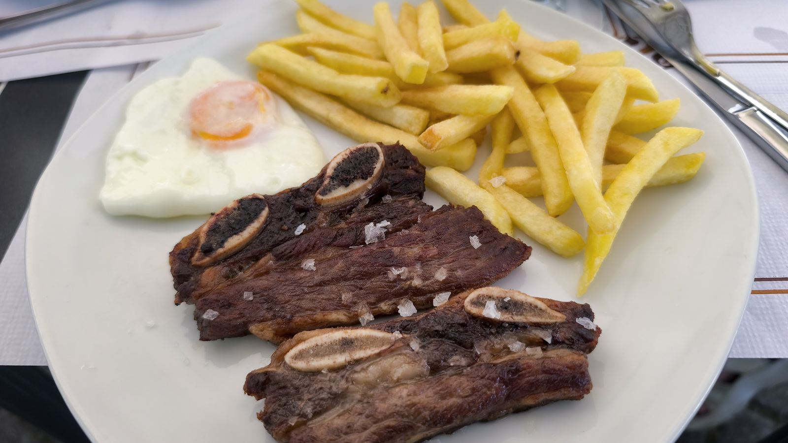
中午氣溫狂飆到 42 度，熱浪真的沒在開玩笑。慶幸這幾天我們都堅持摸黑早起出發，避開了最可怕的時段。
📚 朝聖者小百科：Estella 星星之城
Estella（艾斯特拉） 在西班牙語中就是「星星」。11 世紀納瓦拉國王 Sancho Ramírez 為服務朝聖者而建城，醫院、教堂、修道院與橋樑全為朝聖者而生，被稱為「埃加河上的托雷多」，擁有大量羅馬式教堂與宮殿遺址。
📸 從 San Pedro de la Rúa 教堂階梯俯瞰 Estella 全景最美
🍽️ 朝聖者餐必試牛排，配冰啤酒原地復活
🛏️ 埃斯特利亞公立庇護所 €8，CP 值滿分
🥾 22.5 km（STRAVA 22.46km · 37,106 步 · ↑558m）
🌡️ 42°C 熱浪，務必摸黑出發
☀️ Buen Camino 🙏🏻👣
| 公立庇護所 | €8.0 |
| 朝聖者餐：前菜＋牛排＋啤酒 | €15.0 |
| 超市採買＋自由捐贈水果 | €6.0 |
| 合計 | €29.0 |